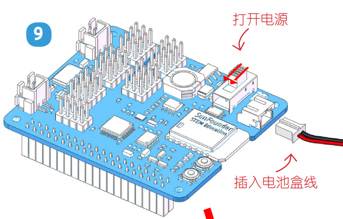

舵机调零¶
为确保舵机已正确设置为 0°，首先将摇臂轻轻插入舵机轴，然后将摇臂轻轻旋转到不同的角度。

按照组装折页上的提示，插入电池盒线，将电源开关拨向ON的位置。等待1-2分钟，会有声音提示树莓派启动成功。
现在，运行
examples/文件夹中的servo_zeroing.py.cd /home/pi/picar-x/example sudo python3 servo_zeroing.py
Note
如果报错，请尝试重新启用树莓派的的 I2C 端口，请参阅： I2C 配置.
接下来，将舵机线插入 P11 端口，如下所示：

此时你会看到舵机臂转动到特定的位置（0°）。 如果伺服臂没有返回到 0°，请按 RST 按钮重新启动Robot HAT。
现在你就可以按照组装折页上的指示继续安装。
Note
在用舵机螺丝固定该舵机前，不要拔出该舵机线，可在固定完之后拔出。
不要在上电情况下随意转动舵机以免损坏；如果舵机轴插入的角度不对，需把舵机拔出再重新插入。
在组装每个舵机之前，都需要将舵机电缆插入 P11 并打开电源以将它的角度设置为 0°。